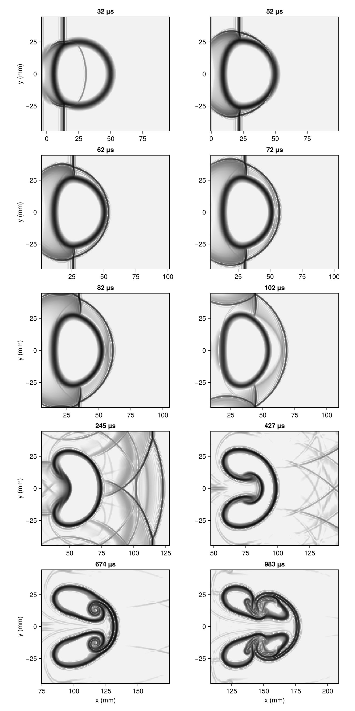
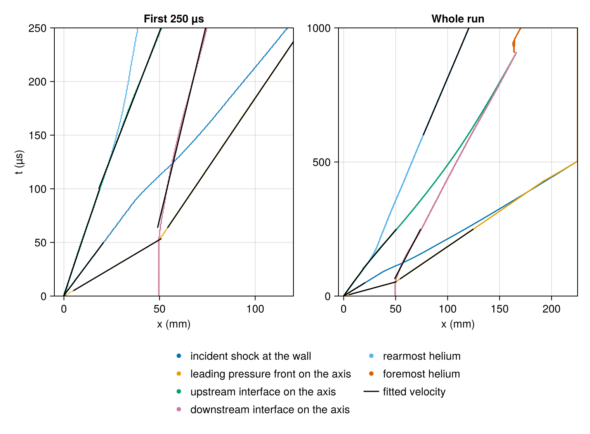
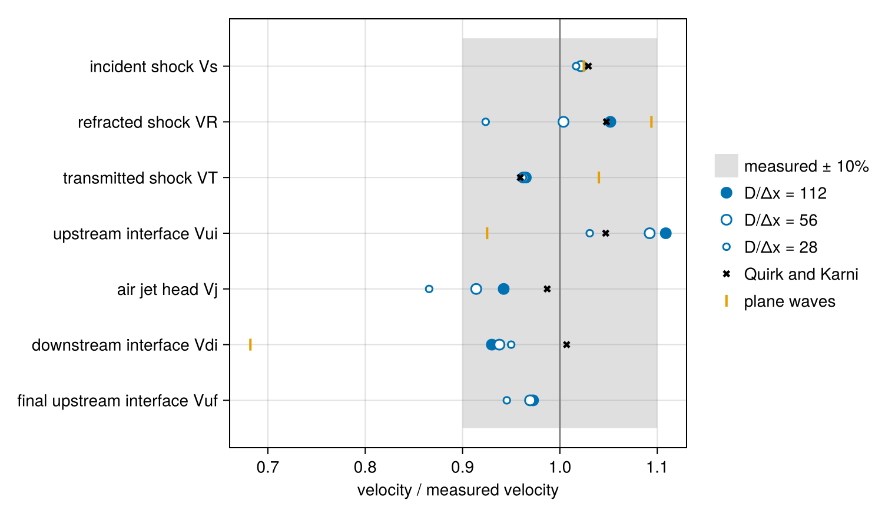

Shock–bubble interaction
The figures on this page were computed on 2026-09-30 at commit ec9361f, with Julia 1.11.4 on 1 rank × 8 threads of a 12th Gen Intel(R) Core(TM) i9-12900K, on 585 × 100, 293 × 50 and 147 × 25 nodes, in 12 min. They are reproduced by julia --project=docs -t 8 examples/shock_bubble.jl.
Haas and Sturtevant (1987) sent weak shocks in air through cylinders and spheres of a lighter or a heavier gas and photographed the waves and the deformation of the gas with spark shadowgraphs. Their helium cylinder, 50 mm in diameter, was held in a nitrocellulose membrane 0.5 µm thick and spanned the 89 mm square test section of the GALCIT 15 cm shock tube. The sound speed of the helium is two and a half times that of the air, so the shock refracted into the cylinder runs ahead of the incident shock and the cylinder acts as a diverging acoustic lens. Behind the shock the upstream face of the cylinder flattens, a jet of air runs along the axis through the helium, and the helium rolls up into a pair of vortices.
Each photograph came from a separate run, at a chosen delay after the shock reached the cylinder. Haas and Sturtevant plotted the positions of the shocks and interfaces against time and took velocities from straight lines fitted to them, with an estimated error of 10%. Quirk and Karni (1994) calculated the same case with an adaptive Euler code on a grid equivalent to 900 cells across the cylinder and compared six of these velocities with the measurements. This page calculates the helium cylinder in two dimensions and compares seven velocities with the measured ones, with those of Quirk and Karni, and with the plane-wave values of one-dimensional gas dynamics where those apply.
The measured and calculated velocities quoted here are from table 2 of Haas and Sturtevant (J. Fluid Mech. 181, 41–76) and table 3 of Quirk and Karni (ICASE Report 94-75, published in J. Fluid Mech. 318, 129–163).
using CompactLES # re-exports MPI
using CompactLES.Regions
MPI.Initialized() || MPI.Init(threadlevel=:funneled)
using CairoMakie
using Printf
CairoMakie.activate!(type = "png")The script takes three settings: ny, the rows of nodes across the half test section in the main run, which two further runs halve and quarter; tend, the time the runs end after the shock reaches the cylinder; and smoke. With smoke=true the runs have 16, 12 and 10 rows, which checks that the page still runs; the figures come from the full run.
opt = CompactLES.script_args(ARGS, (ny = 100, tend = 1.0e-3, smoke = false))
grids = opt.smoke ? (16, 12, 10) : (opt.ny, opt.ny ÷ 2, opt.ny ÷ 4)Gases
Air leaked into the cylinders through the membrane. From the speed and the strength of the refracted wave, Haas and Sturtevant put the sound speed of the gas in the cylinder at 872 m/s, against 1010 m/s for pure helium, and took it to be helium carrying 28% air by mass, about 5% by volume. They took the surrounding air to be pure, with a sound speed of 344 m/s. Here both gases start at 295 K, at which the air has that sound speed, and at atmospheric pressure. The calculation carries no molecular viscosity, conduction or diffusion, and without them the velocities below do not depend on the pressure.
The incident shock heats the air to 337 K, and IdealMixture holds each species at its room-temperature heat capacities. With the temperature-dependent heat capacities of Nasa9Mixture the plane-wave velocities below change by at most 0.2 m/s.
When the incident shock reaches the upstream edge of the cylinder, the shocked air meets helium at rest, and riemann_interface solves that problem for a plane interface: a shock is refracted into the helium and the interface moves off at the contact velocity. When the refracted shock reaches the downstream edge, the shocked helium meets air at rest, and a second Riemann problem gives the shock transmitted into the air and the new velocity of the downstream interface.
eos = IdealMixture(["Air", "He"])
p0, T0 = 101_325.0, 295.0
air = Prim(Y = mass_fractions(eos, "Air" => 1.0; basis = :mass), p = p0, T_ion = T0)
helium = Prim(Y = mass_fractions(eos, "He" => 0.72, "Air" => 0.28; basis = :mass),
p = p0, T_ion = T0)
incident = shock_jump(eos, air, 1.22)
sound_speed(state) = thermodynamic_state(eos, state).c
@printf("sound speed %.0f m/s in the air, %.0f m/s in the helium\n",
sound_speed(air), sound_speed(helium))
@printf("incident shock %.1f m/s; behind it %.1f m/s, %.1f K\n", incident.shock_speed,
incident.velocity, incident.post.T_ion)
function plane_waves(gas)
refraction = riemann_interface(eos, incident.post, gas)
transmission = riemann_interface(eos, refraction.right, air)
return (VR = refraction.right_speed, VT = transmission.right_speed,
Vui = refraction.u_star, Vdi = transmission.u_star)
end
oned = plane_waves(helium)
pure = plane_waves(Prim(Y = mass_fractions(eos, "He" => 1.0; basis = :mass), p = p0,
T_ion = T0))
for (label, w) in (("contaminated helium", oned), ("pure helium", pure))
@printf("%-20s refracted %6.1f, transmitted %5.1f, upstream interface %5.1f, \
downstream interface %5.1f m/s\n", label, w...)
endOn the axis these are the velocities the waves and interfaces take when they form. For pure helium they are the one-dimensional values that Haas and Sturtevant tabulated for this shock (their table 3), to within a meter per second.
Tube
The flow is symmetric about the axis of the tube, so the calculation holds the half of the test section above it, 44.5 mm high, with a SymmetryPlaneBC on the axis. Without viscosity the tube wall is a plane of symmetry as well, and a second SymmetryPlaneBC holds it with the interior scheme; the grid's rows lie half a cell from each plane. The cylinder spans the tube from window to window, and the third dimension is collapsed.
The shock travels toward increasing $x$. The cylinder's upstream edge is at $x$ = 35 mm, and positions below are measured from there. The shock starts 10 mm upstream of it and reaches it after 23.8 µs; times below are measured from that instant, as in the experiment. The gas behind the shock enters through an NSCBCInflowBC at $x = 0$, where waves running upstream leave, and an NSCBCOutflowBC closes the tube at 260 mm, far enough downstream that the helium stays clear of it for the 1 ms of the run. Layers fills a Cylinder with the helium; its interface and the initial shock are spread over three cells. The membrane is left out, as Quirk and Karni left it out.
H, R, xc, x_shock, Lx = 0.0445, 0.025, 0.06, 0.025, 0.26
x_edge = xc - R
t_impact = (x_edge - x_shock) / incident.shock_speed
problem = Problem(
name = "Haas–Sturtevant helium cylinder",
eos = eos,
domain = ((0.0, Lx), (0.0, H), (0.0, 1.0)),
bcs = ((NSCBCInflowBC(incident.post), NSCBCOutflowBC(pinf = p0)),
(SymmetryPlaneBC(), SymmetryPlaneBC()),
PeriodicBC()),
ic = Layers(air,
Slab(1, hi = x_shock) => incident.post,
Cylinder((xc, 0.0, 0.0), R) => helium),
)Run
The main run has 100 rows of nodes across the half test section, a spacing of 0.445 mm and 112 cells across the cylinder, and the numerics are the defaults. Two more runs have 50 and 25 rows. Every fourth step, each run records the helium mole fraction and the pressure on the row of nodes next to the axis, the pressure on the row next to the wall, and the extent of the helium along the tube: the first and last columns in which its mole fraction exceeds one half in any row. At the times of Haas and Sturtevant's photographs it also keeps the magnitude of the density gradient, the quantity a schlieren image shows.
photographs = [32, 52, 62, 72, 82, 102, 245, 427, 674, 983] .* 1e-6
photographs = filter(<=(opt.tend), photographs)
function simulate(ny)
nx = round(Int, Lx / (H / ny)) + 1
solver, Q = setup(problem, Numerics(n_global = (nx, ny, 1)))
t = Float64[]
axis_X, axis_p, wall_p = Vector{Float64}[], Vector{Float64}[], Vector{Float64}[]
rear, front = Float64[], Float64[]
x = Ref(Float64[])
sample = Callback(EveryStep(4), function (solver, Q)
x[], _, X = field_slice(solver, Q, :X; species = 2)
_, _, p = field_slice(solver, Q, :p)
push!(t, solver.t - t_impact)
push!(axis_X, X[:, 1]); push!(axis_p, p[:, 1]); push!(wall_p, p[:, end])
inside = findall(>(0.5), X)
push!(rear, isempty(inside) ? NaN : x[][minimum(I[1] for I in inside)])
push!(front, isempty(inside) ? NaN : x[][maximum(I[1] for I in inside)])
nothing
end)
frames = []
shoot = Callback(AtTime(t_impact .+ photographs), function (solver, Q)
push!(frames, (t = solver.t - t_impact,
schlieren = field_slice(solver, Q, :schlieren)))
nothing
end)
wall = @elapsed run!(solver, Q; tfinal = t_impact + opt.tend,
callback = (sample, shoot))
@printf("%d × %d nodes, h = %.3f mm: %d steps in %.0f s\n", nx, ny, 1e3 * H / ny,
solver.step, wall)
return (; nx, ny, h = H / ny, x = x[], t, axis_X, axis_p, wall_p, rear, front, frames)
end
runs = [simulate(ny) for ny in grids]Images
The figure shows the magnitude of the density gradient on the 100-row grid at the times of the ten photographs in Haas and Sturtevant's figure 7, on a logarithmic gray scale that spans a factor of 300 below the largest value in each frame. Each frame is mirrored about the axis to show the whole test section, is 100 mm long, and starts 10 mm upstream of the rearmost helium. The shock travels from left to right, the opposite of the photographs.
function frame!(ax, frame, x_rear)
x, y, s = frame.schlieren
xs = 1e3 .* (x .- x_edge)
ys = 1e3 .* [-reverse(y); y]
level = log10.(max.([reverse(s, dims = 2) s], 1e-12))
top = maximum(level)
heatmap!(ax, xs, ys, level, colormap = Reverse(:grays),
colorrange = (top - 2.5, top))
left = 1e3 * (x_rear - x_edge) - 10
limits!(ax, left, left + 100, -1e3H, 1e3H)
return ax
end
function rear_at(run, t)
k = argmin(abs.(run.t .- t))
return isfinite(run.rear[k]) ? run.rear[k] : x_edge
end
fine = runs[1]
nrows = cld(length(fine.frames), 2)
fig = Figure(size = (760, 300 * nrows + 20))
for (n, frame) in enumerate(fine.frames)
row, col = fldmod1(n, 2)
ax = Axis(fig[row, col], aspect = AxisAspect(100 / 89), xticks = -25:25:250,
yticks = -25:25:25, title = @sprintf("%.0f µs", 1e6frame.t),
xlabel = row == nrows ? "x (mm)" : "", ylabel = col == 1 ? "y (mm)" : "")
frame!(ax, frame, rear_at(fine, frame.t))
end
rowgap!(fig.layout, 8)
At 32 µs the incident shock has crossed a quarter of the cylinder, and the curved refracted shock inside it runs ahead. By 62 µs the refracted shock has left the helium as the transmitted shock, which joins the incident shock outside the cylinder and leads it there. The upstream face has flattened by 102 µs. At 245 µs the waves reflected from the cylinder and then from the tube wall cross behind the transmitted shock, and the helium has the kidney shape of the photograph at that time. From 427 µs the air jet along the axis drives the helium into two lobes, which roll up into a pair of vortices by 983 µs. The photographs at 674 and 983 µs show fine-scale structure on the lobes that the calculation does not have.
Velocities
The features are those of Haas and Sturtevant's x–t diagrams, and positions are measured on the axis, as theirs were, except for the incident shock and the final upstream interface. The interfaces are where the helium mole fraction crosses one half. The shocks on the axis are the leading pressure front, where the pressure first exceeds the ambient by 5%: the refracted shock until it leaves the helium, then the transmitted shock. The incident shock is where the pressure crosses the middle of its jump on the row next to the wall, outside the shadow of the cylinder. Each velocity is the slope of a straight line fitted to the positions in a window of time:
| velocity | track | window (µs) |
|---|---|---|
| incident shock $V_s$ | pressure front at the wall | 0–50 |
| refracted shock $V_R$ | pressure front on the axis | 5 to exit |
| transmitted shock $V_T$ | pressure front on the axis | exit + 10 to 250 |
| upstream interface $V_{ui}$ | upstream interface on the axis | 0–100 |
| air jet head $V_j$ | upstream interface on the axis | 100–250 |
| downstream interface $V_{di}$ | downstream interface on the axis | exit + 10 to 250 |
| final upstream interface $V_{uf}$ | rearmost helium in any row | 600–1000 |
Here "exit" is the time at which the refracted shock leaves the helium. The incident shock is followed for 50 µs only, since the transmitted shock then reaches the wall ahead of it. Haas and Sturtevant give 0.10 ms as the time at which the jet forms, which divides the upstream interface into the two windows. They list a final velocity of the downstream interface as well, which is taken up below.
crossing(x, v, level; last = false) = begin
i = last ? findlast(>(level), v) : findfirst(>(level), v)
i === nothing ? NaN : x[i]
end
function tracks(run)
x = run.x
return (t = run.t,
upstream = [crossing(x, X, 0.5) for X in run.axis_X],
downstream = [crossing(x, X, 0.5; last = true) for X in run.axis_X],
axis_front = [crossing(x, p, 1.05p0; last = true) for p in run.axis_p],
wall_front = [crossing(x, p, (p0 + incident.post.p) / 2; last = true)
for p in run.wall_p],
rear = run.rear, front = run.front)
end
function slope(t, x, window)
s = findall(k -> window[1] <= t[k] <= window[2] && isfinite(x[k]), eachindex(t))
length(s) < 3 && return NaN
a, b = t[s], x[s]
am, bm = sum(a) / length(a), sum(b) / length(b)
return sum((a .- am) .* (b .- bm)) / sum((a .- am) .^ 2)
end
first_time(t, condition) = (k = findfirst(condition, eachindex(t));
k === nothing ? NaN : t[k])
function features(tr)
t = tr.t
t_exit = first_time(t, k -> t[k] > 0 && tr.axis_front[k] > tr.downstream[k])
return (exit = t_exit,
windows = [(:wall_front, (0.0, 50e-6)),
(:axis_front, (5e-6, t_exit)),
(:axis_front, (t_exit + 10e-6, 250e-6)),
(:upstream, (0.0, 100e-6)),
(:upstream, (100e-6, 250e-6)),
(:downstream, (t_exit + 10e-6, 250e-6)),
(:rear, (600e-6, 1e-3))])
end
feature_names = ["incident shock Vs", "refracted shock VR", "transmitted shock VT",
"upstream interface Vui", "air jet head Vj", "downstream interface Vdi",
"final upstream interface Vuf"]
measured = [410, 900, 393, 170, 230, 145, 113] # Haas and Sturtevant
quirk_karni = [422, 943, 377, 178, 227, 146, NaN]
plane = [incident.shock_speed, oned.VR, oned.VT, oned.Vui, NaN, oned.Vdi, NaN]
trs = [tracks(run) for run in runs]
fs = [features(tr) for tr in trs]
computed = [[slope(tr.t, getfield(tr, f), w) for (f, w) in fe.windows]
for (tr, fe) in zip(trs, fs)]
for (run, fe) in zip(runs, fs)
@printf("%3d rows: the refracted shock leaves the helium at %.0f µs\n", run.ny,
1e6fe.exit)
end
@printf("%-30s %5s %5s %5s %5s %5s %5s\n", "velocity (m/s), rows:", grids...,
"H&S", "Q&K", "1-D")
for k in eachindex(feature_names)
@printf("%-30s %5.0f %5.0f %5.0f %5.0f %5.0f %5.0f\n", feature_names[k],
(c[k] for c in computed)..., measured[k], quirk_karni[k], plane[k])
end
track_labels = ((:wall_front, "incident shock at the wall"),
(:axis_front, "leading pressure front on the axis"),
(:upstream, "upstream interface on the axis"),
(:downstream, "downstream interface on the axis"),
(:rear, "rearmost helium"),
(:front, "foremost helium"))
fig = Figure(size = (760, 560))
tr = trs[1]
for (col, (tmax, title)) in enumerate(((250e-6, "First 250 µs"), (opt.tend, "Whole run")))
ax = Axis(fig[1, col], xlabel = "x (mm)", ylabel = col == 1 ? "t (µs)" : "",
title = title)
for n in (5, 6, 1, 2, 3, 4) # the axis interfaces drawn over the extent
f = track_labels[n][1]
scatter!(ax, 1e3 .* (getfield(tr, f) .- x_edge), 1e6 .* tr.t, markersize = 2,
color = Makie.wong_colors()[n])
end
for (k, (f, w)) in enumerate(fs[1].windows)
V = computed[1][k]
isfinite(V) || continue
s = findall(j -> w[1] <= tr.t[j] <= w[2] && isfinite(getfield(tr, f)[j]),
eachindex(tr.t))
tm = sum(tr.t[s]) / length(s)
xm = sum(getfield(tr, f)[s]) / length(s)
ts = [w[1], min(w[2], tr.t[end])]
lines!(ax, 1e3 .* (xm .+ V .* (ts .- tm) .- x_edge), 1e6 .* ts, color = :black)
end
ylims!(ax, 0, 1e6tmax)
xlims!(ax, -5, col == 1 ? 120 : 1e3 * (Lx - x_edge))
end
Legend(fig[2, 1:2],
[[MarkerElement(color = Makie.wong_colors()[n], marker = :circle, markersize = 8)
for n in eachindex(track_labels)]; [LineElement(color = :black)]],
[[label for (_, label) in track_labels]; "fitted velocity"],
orientation = :horizontal, nbanks = 4, framevisible = false)
The x–t diagram of the 100-row run has the shape of Quirk and Karni's figure 13 over the first 250 µs: the refracted shock crosses the helium in 54 µs, the transmitted shock then runs ahead of the incident one, and the downstream interface stays at rest until the refracted shock reaches it. The upstream interface on the axis and the rearmost helium coincide at first and part after about 120 µs, when the air jet runs ahead along the axis and the helium on either side falls behind.
The ratio of each velocity to the measured one:
fig = Figure(size = (760, 440))
ax = Axis(fig[1, 1], xlabel = "velocity / measured velocity",
yticks = (1:7, feature_names), yreversed = true)
poly!(ax, Rect(0.9, 0.5, 0.2, 7), color = (:gray, 0.25), label = "measured ± 10%")
vlines!(ax, [1.0], color = :gray)
for (n, (c, ny)) in enumerate(zip(computed, grids))
scatter!(ax, c ./ measured, 1:7, color = n == 1 ? Makie.wong_colors()[1] : :white,
strokewidth = 1.5, strokecolor = Makie.wong_colors()[1],
markersize = (12, 12, 8)[n], label = "$ny rows")
end
scatter!(ax, quirk_karni ./ measured, 1:7, marker = :xcross, color = :black,
label = "Quirk and Karni")
scatter!(ax, plane ./ measured, 1:7, marker = :vline, markersize = 16,
color = Makie.wong_colors()[2], label = "plane waves")
Legend(fig[1, 2], ax, framevisible = false)
On 100 rows, six of the seven velocities lie within the 10% that Haas and Sturtevant estimated for their measurements, and the upstream interface lies 11% above. The shock velocities agree with Quirk and Karni's to 1%, and the interface and jet velocities differ from theirs by 4% to 8%.
The incident shock moves at the speed its Mach number gives, and the measured 410 m/s lies within the error. The transmitted shock is the same on all three grids, 4% below the measurement and 7% below the plane-wave value. The refracted shock is not: 831, 903 and 947 m/s on 25, 50 and 100 rows, below the plane-wave 985 m/s on each. The increase from one grid to the next shrinks only from 72 to 44 m/s, so these grids do not settle it.
The downstream interface moves at 135 m/s, against 145 m/s measured and 99 m/s for the plane wave; Haas and Sturtevant also found it faster than the plane-wave value. On the three grids it moves at 135 to 138 m/s.
The upstream interface does not move at one velocity before the jet forms. The fits over shorter windows show it accelerate while the face flattens:
for (run, tr) in zip(runs, trs)
@printf("%3d rows: upstream interface %.0f m/s over 0–25 µs, %.0f over 0–50 µs, \
%.0f over 50–100 µs\n", run.ny, slope(tr.t, tr.upstream, (0.0, 25e-6)),
slope(tr.t, tr.upstream, (0.0, 50e-6)),
slope(tr.t, tr.upstream, (50e-6, 100e-6)))
endOver the first 25 µs the interface on 100 rows moves at 164 m/s, close to the plane-wave 157 m/s, and from 50 to 100 µs at 197 m/s; the window of 0–100 µs averages the two. Over 0–50 µs the velocity is 177 m/s, within 4% of the measurement. Haas and Sturtevant describe their value as the initial velocity of the interface without giving its window, so the comparison depends on that choice by more than the measurement's error. On the coarser grids the first 25 µs are slower, 150 and 110 m/s on 50 and 25 rows.
The jet head moves at 217 m/s from 100 to 250 µs, 6% below the measured 230 m/s and 4% below Quirk and Karni's 227 m/s. On 50 and 25 rows it moves at 210 and 199 m/s: the velocity rises with resolution by 11 and then 7 m/s per halving of the spacing, and these three grids do not show where it settles.
Haas and Sturtevant also list a final velocity of the downstream interface, 97 m/s, taken after the head of the jet has struck it. The calculation does not give it a stable value. On the axis the jet closes on the downstream interface and leaves a thin sheet of helium ahead of itself; the run prints, at four times, the thickness of the helium between the jet head and the air beyond, where its mole fraction exceeds one half, and the largest mole fraction on the axis:
for (run, tr) in zip(runs, trs)
print(lpad(run.ny, 3), " rows:")
for t in (600e-6, 700e-6, 800e-6, 900e-6)
k = argmin(abs.(tr.t .- t))
@printf(" %.0f µs %4.1f mm %.2f", 1e6t,
1e3 * (tr.downstream[k] - tr.upstream[k]), maximum(run.axis_X[k]))
end
println()
endAt 600 µs the sheet is 3.1 mm thick on 100 rows, 3.6 mm on 50 and 7.1 mm on 25, and by 800 µs it is about one cell thick on the two finer grids. As it thins its largest mole fraction falls, more slowly on the finer grids: at 700 µs it is 0.80 on 100 rows against 0.72 and 0.66 on 50 and 25. By 900 µs it has fallen to one half or below on all three, and only then does the foremost helium jump back to the lobes. That leaves 100 to 200 µs before the end of the run, and a fit over them depends on where it starts, so the page does not report a final downstream velocity. The rearmost helium, at the upstream side of the lobes, moves at 110 m/s from 600 µs on, against the measured final upstream velocity of 113 m/s.
What this checks
- The plane-wave velocities from
riemann_interfacereproduce the one-dimensional values of Haas and Sturtevant for pure helium. - In two dimensions, on 112 cells across the cylinder, the shocks, the interfaces and the jet move within the 10% error of the measured velocities, apart from the upstream interface, whose value depends on the time over which it is fitted. The shock velocities agree with Quirk and Karni's calculation to 1%.
- The incident and transmitted shocks and the downstream interface give the same velocity on 25, 50 and 100 rows. The refracted shock and the jet speed up with resolution and are not settled on these grids.
- The jet breaks through the downstream interface on the axis between 800 and 900 µs, when the sheet of helium ahead of it, about one cell thick by then, has mixed down to a mole fraction of one half; the finer grids keep the sheet's helium longer.
This page was generated using Literate.jl.